Inspiration guide for our wedding entourage and guests
Mothers are encouraged to wear elegant emerald green gowns with gold accents, while fathers may wear a champagne or beige Barong Tagalog paired with dark trousers and formal shoes.
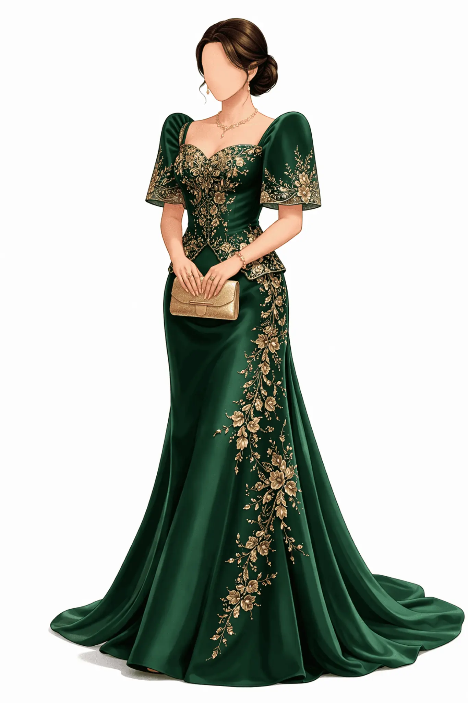
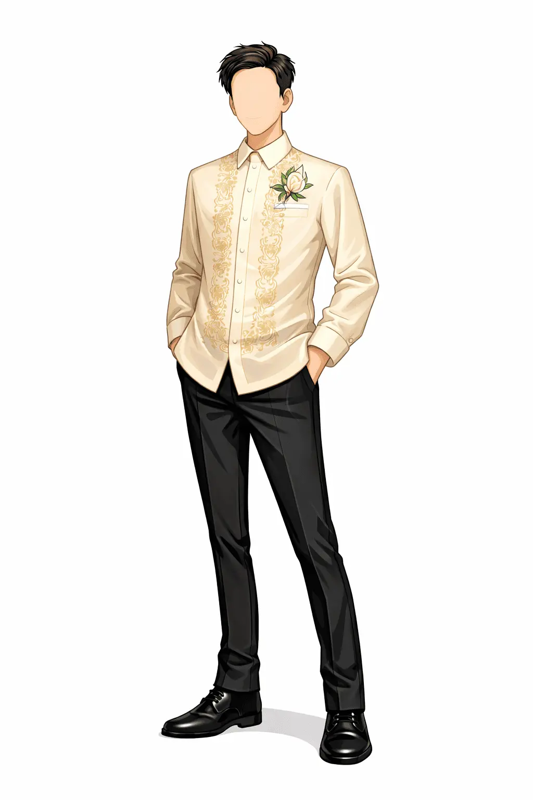
The Maid of Honor may wear an elegant forest green gown, while the Best Man may wear a formal suit in a forest green tone with formal black shoes.
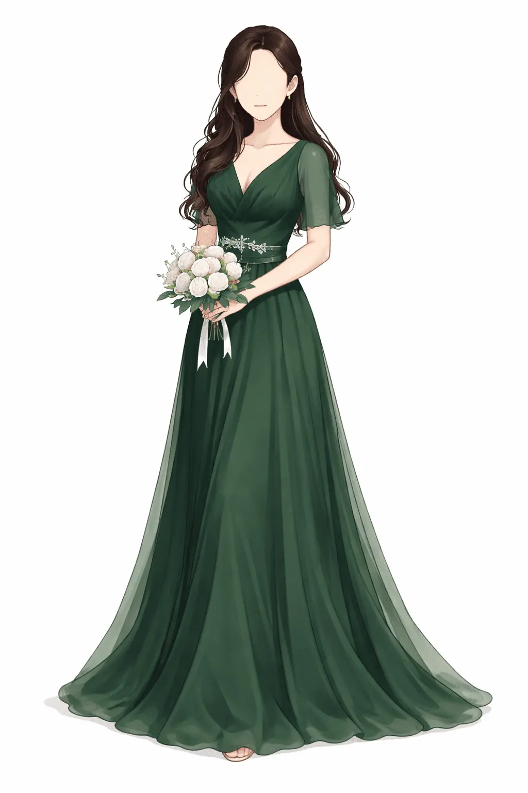
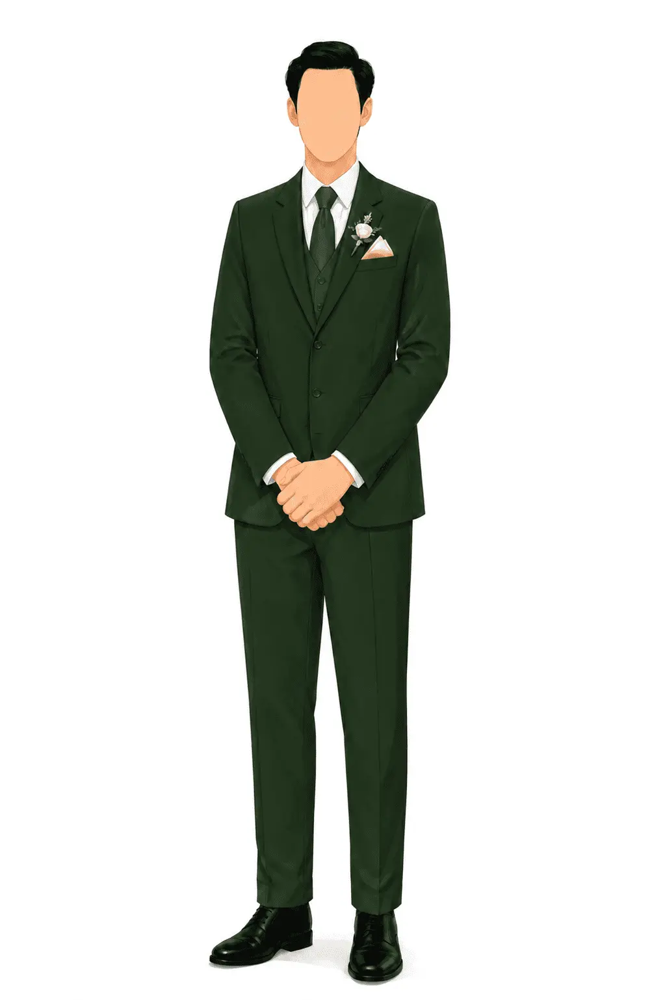
Secondary sponsors may wear formal emerald green attire for ladies, while gentlemen may wear champagne-toned trousers and a vest, a white polo shirt, an emerald green tie, and black formal shoes.
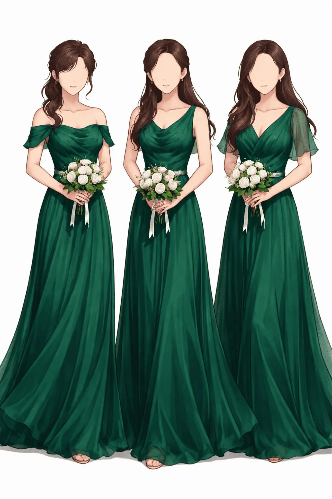
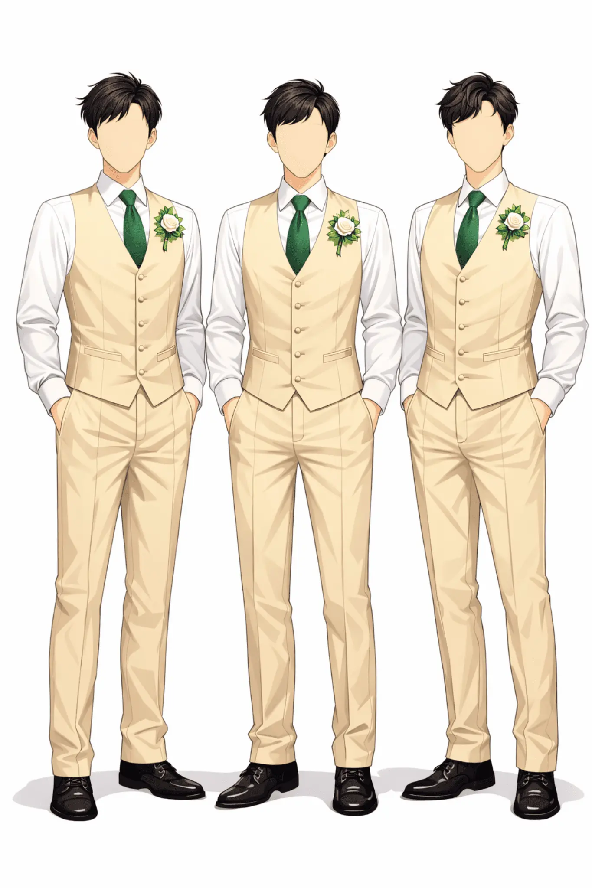
Bridesmaids may wear elegant sage green gowns, while groomsmen may wear champagne trousers, white shirts, sage green suspenders, and black formal shoes.
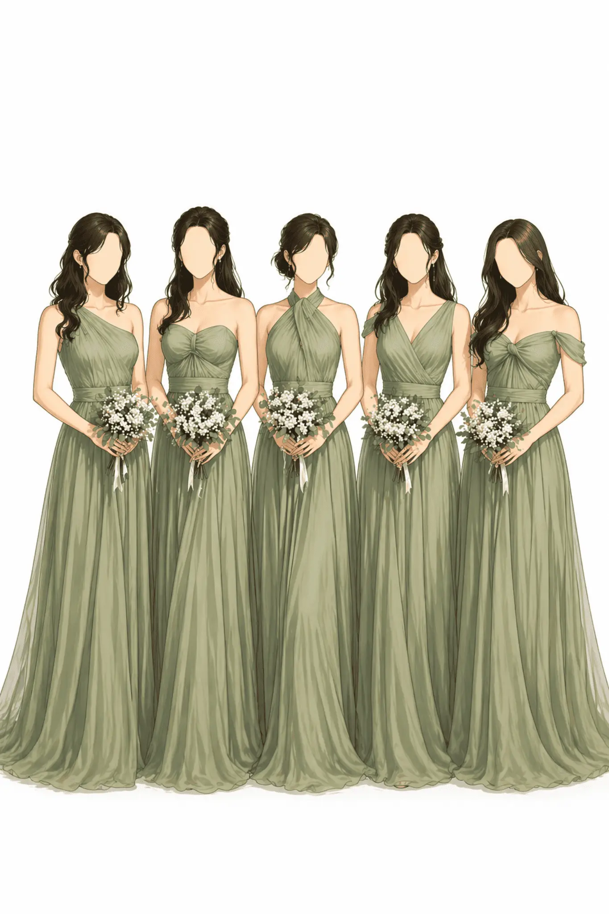
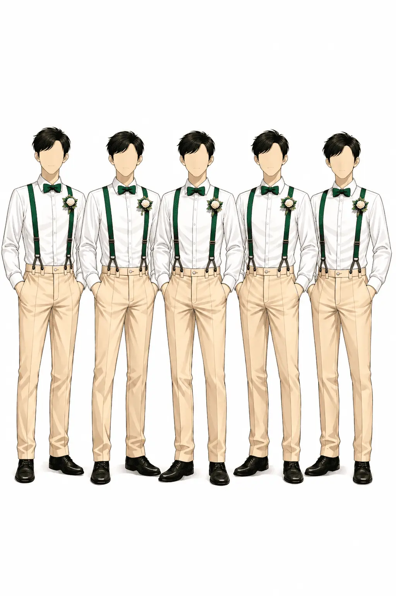
Ninangs may wear olive green formal attire with elegant heels, while Ninongs may wear a champagne-colored Barong Tagalog with dark trousers and formal black shoes.
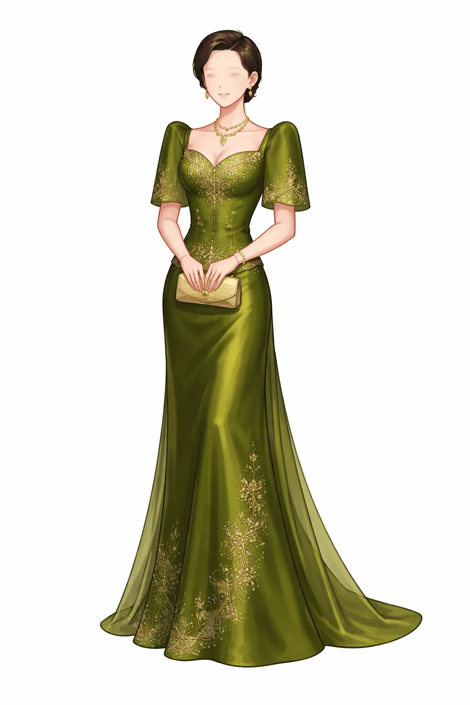
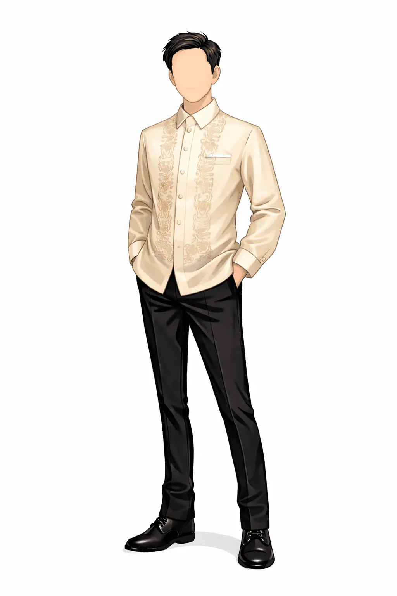
Little members of the entourage may wear coordinated formal attire in sage green tones. Accessories such as floral crowns, baskets, or pillows may be included to match the wedding theme.
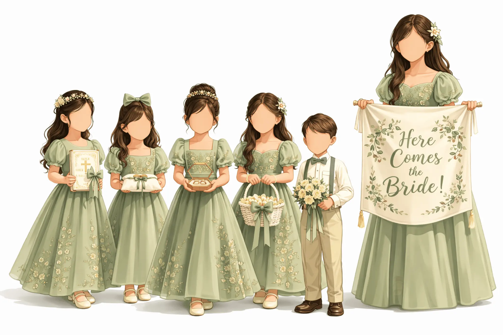
Guests are encouraged to wear semi-formal or formal attire in shades of green, champagne, or beige. Please avoid wearing white.
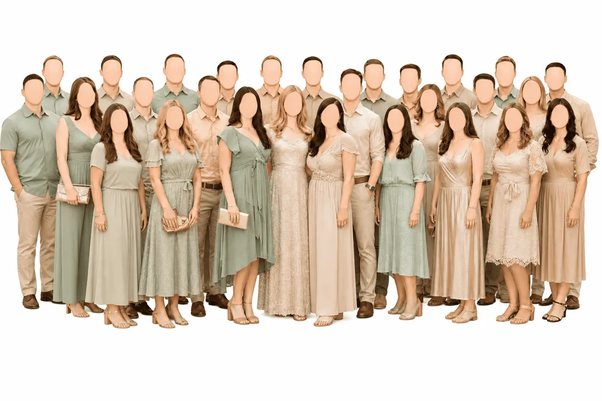